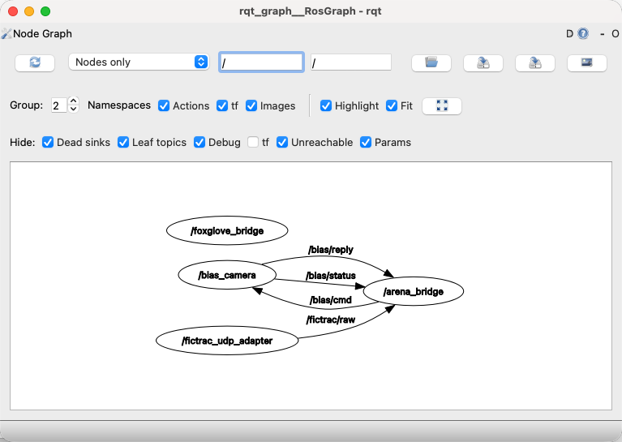
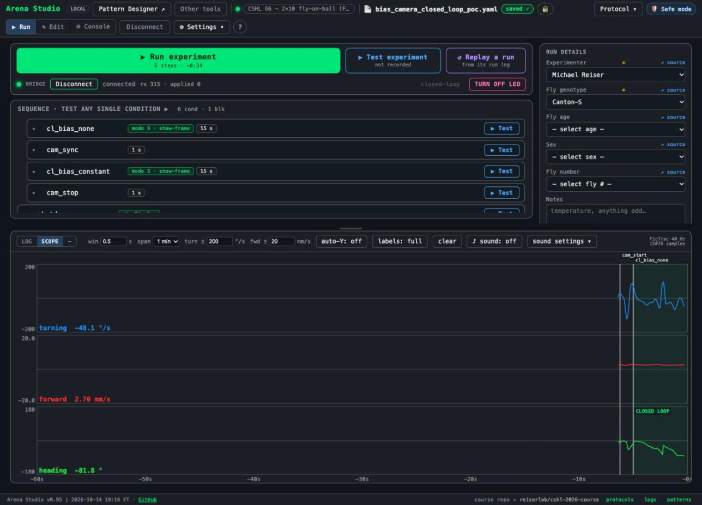

<title>ROS Studio PoC</title>
<meta name="description" content="Where the LAB-303 Plan B spike stands on 2026-10-14: the ROS 2 bridge graph, MCAP as the record of truth, what was measured, how to run and look at it.">
<link rel="stylesheet" href="https://fonts.googleapis.com/css2?family=JetBrains+Mono:wght@400;600&family=IBM+Plex+Mono:wght@400;500&family=IBM+Plex+Sans:wght@400;500&display=swap">
<style>
  /* Layout: one reading column (68ch) with full-bleed figures; the lab tools' dark palette first. */
  :root {
    --bg: #0f1419; --surface: #1a1f26; --border: #2d3640; --fg: #e6edf3; --dim: #8b949e;
    --accent: #00e676; --accent-ink: #0f1419; --warn: #ff9100; --ros: #d500f9; --link: #58a6ff;
    --head: 'JetBrains Mono', ui-monospace, SFMono-Regular, Menlo, monospace;
    --body: 'IBM Plex Sans', system-ui, -apple-system, 'Segoe UI', sans-serif;
    --mono: 'IBM Plex Mono', ui-monospace, SFMono-Regular, Menlo, monospace;
    color-scheme: dark;
  }
  @media (prefers-color-scheme: light) {
    :root:not([data-theme="dark"]) {
      --bg: #f6f8fa; --surface: #ffffff; --border: #d0d7de; --fg: #1f2328; --dim: #57606a;
      --accent: #1a7f37; --accent-ink: #ffffff; --warn: #9a6700; --ros: #8250df; --link: #0969da;
      color-scheme: light;
    }
  }
  :root[data-theme="light"] {
    --bg: #f6f8fa; --surface: #ffffff; --border: #d0d7de; --fg: #1f2328; --dim: #57606a;
    --accent: #1a7f37; --accent-ink: #ffffff; --warn: #9a6700; --ros: #8250df; --link: #0969da;
    color-scheme: light;
  }
  body { background: var(--bg); color: var(--fg); font: 16px/1.65 var(--body); margin: 0; padding-block: 0 48px; padding-inline: 16px; }
  main { max-width: 68ch; margin: 0 auto; }
  header.top { padding-block: 40px 24px; border-bottom: 1px solid var(--border); margin-bottom: 28px; }
  .eyebrow { font: 600 11px/1.6 var(--head); letter-spacing: .08em; text-transform: uppercase; color: var(--ros); }
  h1 { font: 600 30px/1.2 var(--head); margin: 8px 0 10px; text-wrap: balance; }
  h2 { font: 600 19px/1.3 var(--head); margin: 40px 0 12px; text-wrap: balance; }
  h3 { font: 500 16px/1.4 var(--head); margin: 24px 0 8px; }
  p, li { max-width: 68ch; }
  .lede { color: var(--dim); font-size: 17px; margin: 0; }
  .status { display: flex; flex-wrap: wrap; gap: 8px; margin-top: 14px; }
  .pill { font: 500 12px/1.8 var(--mono); padding: 0 10px; border-radius: 999px; border: 1px solid var(--border); background: var(--surface); color: var(--dim); }
  .pill.ok { color: var(--accent); border-color: var(--accent); }
  .pill.warn { color: var(--warn); border-color: var(--warn); }
  a { color: var(--link); text-decoration-thickness: 1px; text-underline-offset: 2px; }
  code, pre { font-family: var(--mono); font-size: 13.5px; }
  code { background: var(--surface); border: 1px solid var(--border); border-radius: 4px; padding: 1px 5px; }
  pre { background: var(--surface); border: 1px solid var(--border); border-radius: 8px; padding: 12px 14px; overflow-x: auto; line-height: 1.5; }
  pre code { background: none; border: 0; padding: 0; }
  figure { margin: 20px 0; }
  figure img { display: block; max-width: 100%; height: auto; border: 1px solid var(--border); border-radius: 8px; background: var(--surface); }
  figcaption { font: 400 13px/1.5 var(--mono); color: var(--dim); margin-top: 8px; }
  .diagram { background: var(--surface); border: 1px solid var(--border); border-radius: 8px; padding: 12px; overflow-x: auto; }
  .diagram svg { display: block; width: 100%; height: auto; min-width: 560px; font-family: var(--mono); }
  .diagram text { fill: var(--fg); font-size: 12px; }
  .diagram text.s { fill: var(--dim); font-size: 11px; }
  .diagram rect.node { fill: var(--bg); stroke: var(--border); }
  .diagram rect.ros { stroke: var(--ros); }
  .diagram rect.rec { stroke: var(--warn); }
  .diagram rect.studio { stroke: var(--accent); }
  .diagram line, .diagram path.edge { stroke: var(--dim); stroke-width: 1.2; fill: none; }
  table { border-collapse: collapse; width: 100%; font-size: 14px; margin: 12px 0; }
  .tablewrap { overflow-x: auto; }
  th, td { text-align: left; vertical-align: top; padding: 8px 10px; border-bottom: 1px solid var(--border); }
  th { font: 600 12px/1.5 var(--head); letter-spacing: .04em; text-transform: uppercase; color: var(--dim); }
  td.num { font-family: var(--mono); font-variant-numeric: tabular-nums; white-space: nowrap; }
  .grid { display: grid; grid-template-columns: repeat(auto-fit, minmax(240px, 1fr)); gap: 12px; margin: 14px 0; }
  .card { background: var(--surface); border: 1px solid var(--border); border-radius: 10px; padding: 14px 16px; min-width: 0; }
  .card h3 { margin: 0 0 6px; font-size: 14px; }
  .card p { margin: 0; font-size: 14px; color: var(--dim); }
  .legend { display: flex; gap: 14px; flex-wrap: wrap; font: 400 12px/1.6 var(--mono); color: var(--dim); margin-top: 8px; }
  .sw { display: inline-block; width: 10px; height: 10px; border-radius: 2px; border: 2px solid; vertical-align: -1px; margin-right: 5px; }
  footer { margin-top: 48px; padding-top: 16px; border-top: 1px solid var(--border); font: 400 12px/1.6 var(--mono); color: var(--dim); }
  @media (max-width: 480px) { h1 { font-size: 24px; } .diagram svg { min-width: 520px; } }
</style>

<main>
<header class="top">
  <div class="eyebrow">LAB-303 · Plan B spike · stage of 2026-10-14</div>
  <h1>ROS Studio proof of concept</h1>
  <p class="lede">The Arena Studio, unchanged on the wire, driving a fly-on-ball closed loop and a BIAS camera through a ROS 2 node graph, with every run recorded as an MCAP bag and the familiar run log derived from it.</p>
  <div class="status">
    <span class="pill ok">harness 46 / 46</span>
    <span class="pill ok">Mac bench run: byte-identical log</span>
    <span class="pill warn">Windows: untested</span>
    <span class="pill">draft PR #254 · not for merge yet</span>
  </div>
</header>

<h2>What this stage is</h2>
<p>Frank proposed building the bridge's device connectors on ROS 2 (Plan B) instead of inside the Python bridge (Plan A). The spike exists so the choice can be made on measured data rather than on the plans. It keeps bridge 3.4 installed beside it, keeps the browser protocol identical, and adds the three things Plan B promised: a record of truth in MCAP, typed messages, and a graph that any ROS tool can look at. The decision itself has not been made.</p>

<h2>The graph</h2>
<p>Five processes on one machine. Only the bridge node talks to the Studio, over the same WebSocket as bridge 3.4. Programs that are not ROS (FicTrac, the BIAS camera app, the simulator) stay outside the graph and are wrapped by one small adapter each.</p>
<div class="diagram">
<svg viewBox="0 0 680 420" role="img" aria-label="Node graph: FicTrac and BIAS reach adapters, adapters publish topics, the bridge node consumes them, serves the Studio and records a bag">
  <defs><marker id="a" viewBox="0 0 10 10" refX="8" refY="5" markerWidth="6" markerHeight="6" orient="auto-start-reverse"><path d="M2 1L8 5L2 9" fill="none" stroke="context-stroke" stroke-width="1.5" stroke-linecap="round" stroke-linejoin="round"/></marker></defs>
  <rect class="node" x="20" y="30" width="150" height="50" rx="8"/><text x="95" y="50" text-anchor="middle">FicTrac or simulator</text><text class="s" x="95" y="68" text-anchor="middle">UDP 60000 · not ROS</text>
  <rect class="node ros" x="20" y="130" width="150" height="50" rx="8"/><text x="95" y="150" text-anchor="middle">fictrac_udp_adapter</text><text class="s" x="95" y="168" text-anchor="middle">ROS node</text>
  <rect class="node" x="20" y="250" width="150" height="50" rx="8"/><text x="95" y="270" text-anchor="middle">BIAS camera app</text><text class="s" x="95" y="288" text-anchor="middle">HTTP 5010 · not ROS</text>
  <rect class="node ros" x="20" y="350" width="150" height="50" rx="8"/><text x="95" y="370" text-anchor="middle">bias_camera</text><text class="s" x="95" y="388" text-anchor="middle">ROS node</text>
  <line x1="95" y1="80" x2="95" y2="128" marker-end="url(#a)"/>
  <line x1="95" y1="350" x2="95" y2="302" marker-end="url(#a)"/>
  <line x1="95" y1="300" x2="95" y2="348" marker-end="url(#a)" stroke-dasharray="3 3"/>
  <rect class="node ros" x="240" y="130" width="190" height="50" rx="8"/><text x="335" y="150" text-anchor="middle">/fictrac/frame</text><text class="s" x="335" y="168" text-anchor="middle">FicTracFrame or String · 50 Hz</text>
  <rect class="node ros" x="240" y="320" width="190" height="50" rx="8"/><text x="335" y="340" text-anchor="middle">/bias/cmd · /bias/reply</text><text class="s" x="335" y="358" text-anchor="middle">/bias/status 1 Hz · JSON</text>
  <line x1="170" y1="155" x2="238" y2="155" marker-end="url(#a)"/>
  <line x1="170" y1="375" x2="238" y2="352" marker-end="url(#a)"/>
  <rect class="node ros" x="500" y="130" width="160" height="50" rx="8"/><text x="580" y="150" text-anchor="middle">arena_bridge</text><text class="s" x="580" y="168" text-anchor="middle">closed loop + recorder</text>
  <line x1="430" y1="155" x2="498" y2="155" marker-end="url(#a)"/>
  <path class="edge" d="M430 345 L465 345 L465 190 L540 190" marker-end="url(#a)" stroke="var(--dim)"/>
  <rect class="node studio" x="500" y="30" width="160" height="50" rx="8"/><text x="580" y="50" text-anchor="middle">Arena Studio</text><text class="s" x="580" y="68" text-anchor="middle">WebSocket 8765 · unchanged</text>
  <line x1="580" y1="130" x2="580" y2="82" marker-end="url(#a)"/>
  <rect class="node ros" x="500" y="230" width="160" height="50" rx="8"/><text x="580" y="250" text-anchor="middle">/arena/frame</text><text class="s" x="580" y="268" text-anchor="middle">browser · event · session</text>
  <line x1="580" y1="180" x2="580" y2="228" marker-end="url(#a)"/>
  <rect class="node rec" x="500" y="330" width="160" height="50" rx="8"/><text x="580" y="350" text-anchor="middle">MCAP bag per run</text><text class="s" x="580" y="368" text-anchor="middle">every topic · converted later</text>
  <line x1="580" y1="280" x2="580" y2="328" marker-end="url(#a)"/>
</svg>
<div class="legend"><span><span class="sw" style="border-color:var(--ros)"></span>ROS node or topic</span><span><span class="sw" style="border-color:var(--accent)"></span>the browser side</span><span><span class="sw" style="border-color:var(--warn)"></span>the record</span><span><span class="sw" style="border-color:var(--border)"></span>not ROS</span></div>
</div>
<figure>
  
  <figcaption>rqt_graph on the Mac while the rig was up (default environment, String topics; the typed environment shows /fictrac/frame instead of /fictrac/raw). The foxglove_bridge node is the live feed for Foxglove Studio.</figcaption>
</figure>

<h2>What a run records</h2>
<p>While a run's log is open, the bridge node writes one bag. Device topics go in as received. Three streams only the bridge can produce go in beside them, each carrying the writer's emission sequence number so the derived log keeps today's line order.</p>
<div class="grid">
  <div class="card"><h3>/arena/frame</h3><p>One record per FicTrac frame: the index the display was asked to show, with the closed-loop node's own sample time. Reconstruction uses that clock, never the recorder's.</p></div>
  <div class="card"><h3>/arena/browser</h3><p>Every message the Studio sent, verbatim, with its receive stamp: config, log events, controller telemetry rows, connector commands, the export request.</p></div>
  <div class="card"><h3>/arena/event · /arena/session</h3><p>bias_config, heading_tare, connector status, source lost or resumed, warnings; the run's open and close with the one millisecond base.</p></div>
  <div class="card"><h3>The converter</h3><p>Pure Python, no ROS process: bag in, behavior_v2 or v1 or full out. Reads a crash-torn bag. The Studio's log_export now answers with its output.</p></div>
</div>
<figure>
  
  <figcaption>The Studio on this branch connected through the graph after the bench run: six steps (camera start, two closed-loop trials, camera sync and stop, shutdown), the scope fed by the model fly at 50 Hz.</figcaption>
</figure>

<h2>What was measured on the Mac</h2>
<div class="tablewrap"><table>
  <tr><th>Question</th><th>Result</th></tr>
  <tr><td>Does the derived log equal the live writer's?</td><td>Every sequenced line byte-identical, in order, in every run. Kinefly and BIAS lines, which are derived from device topics, match in content within 1 to 2 ms and about 5 % land one neighbour apart.</td></tr>
  <tr><td>Bench run with the G6 controller and the real BIAS app</td><td>6 of 6 steps, every camera command ok, a 167 MB recording. 20 272 records in the bag, converted in <span class="num">315 ms</span>. Closed-loop report idx mismatch 0.13 % and 0.00 %. runlog-check OK.</td></tr>
  <tr><td>Typed messages through pixi</td><td>pixi-build-ros builds the three .msg types inside <code>pixi install -e typed</code> in about 17 s on the Mac, first try. colcon works too after an rpath fix. Windows needs MSVC and is untested.</td></tr>
  <tr><td>Crash: bridge node killed mid-run</td><td>Crash-safe writer profile: about one frame lost, recovered with <code>--recover</code>. rosbag2's defaults: the whole short run lost, because it sits in one unflushed chunk.</td></tr>
  <tr><td>Cost</td><td>Environment 1.0 to 1.7 GB (bridge 3.4's is 0.28 GB); 3 to 5 processes per rig; no added closed-loop latency (p50 0.87 ms, p99 1.65 ms adapter to bridge).</td></tr>
  <tr><td>Readers</td><td>No changes needed: the JS readers, closed-loop-report.py, runlog-check.py and the v1/v2 round trip all pass on the derived log.</td></tr>
</table></div>
<p>The full table with every number, and the list of what broke along the way, is in <code>ros2-poc/README.md</code> under "Plan B spike".</p>

<h2>How to run it</h2>
<pre><code>cd ros2-poc
pixi install                       # default: String topics, always installs
pixi install -e typed              # optional: builds the .msg package (needs a compiler)
pixi run rig -- --sim --bias --bias-args "--video-dir /abs/path"
python ../.claude/nocache-server.py 8092      # the Studio of this branch, from the repo root
# Chrome: http://localhost:8092/arena_studio.html?p=bias_camera_closed_loop_poc&amp;rig=cshl_g6_2x10_ball
pixi run export                    # closes the run's bag and writes the converted log
pixi run test                      # the 46-check harness, no hardware</code></pre>

<h2>How to look at it</h2>
<div class="tablewrap"><table>
  <tr><th>View</th><th>Command</th></tr>
  <tr><td>Live graph as a diagram or table</td><td><code>pixi run graph</code> (Mermaid), <code>pixi run graph -- --text</code></td></tr>
  <tr><td>Live graph window</td><td><code>pixi install -e viz</code>, then <code>pixi run -e viz rqt-graph</code></td></tr>
  <tr><td>A recorded run, anywhere</td><td>Foxglove (free account), open <code>runlogs/&lt;run&gt;.bag/&lt;run&gt;_0.mcap</code>, then Layout → Import → <code>docs/foxglove-arena-layout.json</code>: plots of idx, heading, bias and epoch from the typed frames, raw views of the browser messages, events and BIAS replies</td></tr>
  <tr><td>The live run in Foxglove</td><td><code>pixi run -e viz foxglove-bridge</code>, connect to ws://localhost:8766</td></tr>
  <tr><td>Plain ROS CLI</td><td><code>ros2 topic hz /arena/frame</code>, <code>ros2 bag info runlogs/&lt;run&gt;.bag</code></td></tr>
</table></div>

<h2>What is still open</h2>
<ul>
  <li>Windows, where most rigs live: the install, the typed build, BIAS with a FLIR camera, a real FicTrac. The step-by-step is <code>ros2-poc/WINDOWS-TEST.md</code>.</li>
  <li>The closed-loop math still runs inside the bridge node. A separate process is Plan B's full shape; the spike measured the ordering cost it would bring (17 same-millisecond swaps in 3949 lines, readers unaffected).</li>
  <li>The Studio asks the bridge to export only when it commits to the course repo; otherwise the bag stays open until the next run. A real Plan B bridge should close the bag at run end.</li>
  <li>Serving this Studio from GitHub Pages at <code>/ros/</code> needs the small deploy-tooling change on <code>main</code> first; the lab test serves it from the checkout instead.</li>
</ul>

<footer>ros2-poc/docs/plan-b-explainer.html · branch claude/ros-studio-plan-b-c44942 · webDisplayTools</footer>
</main>
